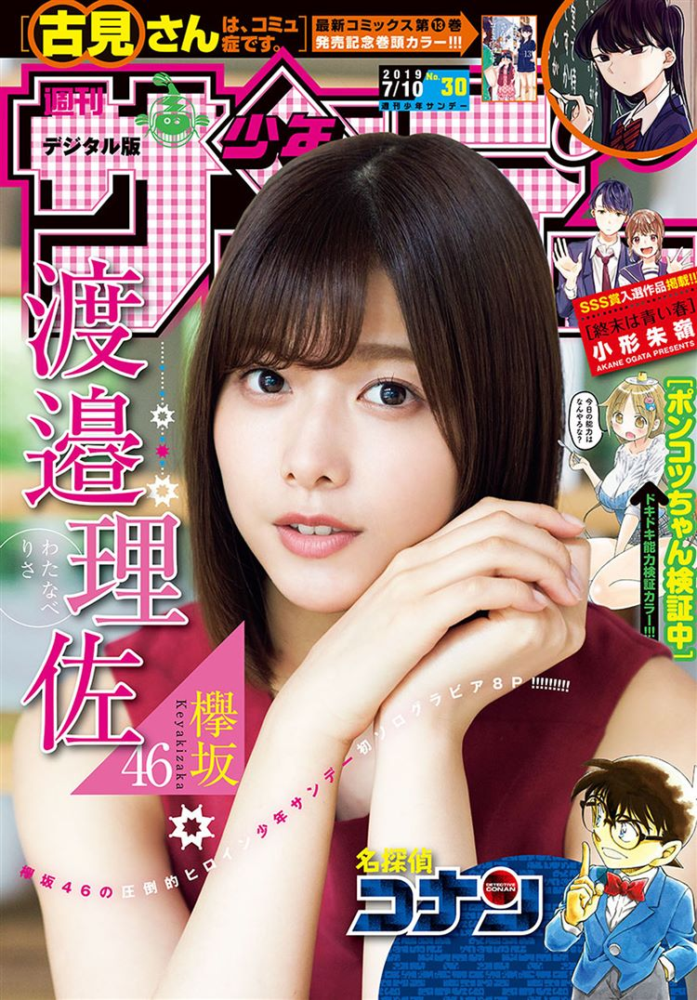

This week's Weekly Shonen Sunday posting order & comments from the author.

Question of the week
"Any surprising changes lately?"
Kimi wa 008
The conifer got too warm and is wilting. So now the taphrina pruni has started to thrive on my nanking cherries. (TN -Taphirina pruni is a fungal plant pathogen)
SWITCH

The box for the Fue Ramune toys.
Detective Conan

They stopped selling Doc Martens. (Sob.)
Maoujo de Oyasumi
My editor said that the Country Ma'ams got smaller. (TN - A type of cookie.)
Yuko sae tatakaeba
Duck Hunt's Up-B cancel became tolerable! (TN - A Smash brothers reference.)
Major 2nd

My hair is graying more and more...
Amano Megumi wa suki darake!

Two of the huge trees in my neighborhood were cut down so now the scenery looks a little different.
Ponkotsu-chan Kenshochuu

Before I had realized it, the parking lot's ceiling had a swallow's nest on it.
Aozakura Bouei daigakkou Monogatari
My set up bridge in order to connect the defense force's cafeteria and bath together. (My art is crying.)
Tonikaku Cawaii
The white cat toy I kept as a quasi pet somehow became the second biggest cat in my house...
Tantei Xeno to Nanatsu no Satsujin Misshitsu
Becoming completely tired of the game I was hooked to not that long ago.
Fire Rabbit!!
The image quality of the games in the arcades.
Souboutei Kowasubeshi

There are so few book stores around nowadays...it's kind of sad...
Undine ha Kyou mo Koi wo suru ka?

I've become a little faster at drawing!
Maiko-san chi no Makanai-san
If we're talking about right now, then how long it remains sunny during the day.
Gofun go no Sekai

How real Global warming is. (crying).
Anonatsu 1959

Robot cleaners are so effective and convenient that it's surprising.
Sokyuu no Ariadne

The taxis within the metropolitan area have changed so fast that I was surprised.
Shumatsu wa Aoi Haru (One-Shot)
Pleased to meet you! I'm a newbie so please enjoy this work! I'm so nervous!!
Chrono Magia: Infinity Gear

It's like...the weather going from hot to cold so fast is kinda bad.
Hoankan Evans no Uso ~Dead or Love~
The surroundings of my alma matter's school. The "Oshidori" is gone now...(TN- This seems to be a restaurant named after a species of duck (But with a different kanji) from what I was able to google up.)
MAO
I was surprised to find the eastern part of Kurume where I once lived is now a busy metropolis.
Be Blues!

The amount of grass that's grown in my yard!! I'd better cut it...
Zettai Karen Children

I'm not bald, my scalp is just tired.
RYOKO

Thank you for reading. May everyone's dinner tables prosper. See ya~
Youkai Giga

That person in my graduation photo changed suddenly.
Tokaichi Hitoribocchi Nouen

It surprised me that the temperature in Tokaichi passed 38 degrees Celsius.
Komi-san wa komyusho desu
Tomohito Oda
My wife's stomach.